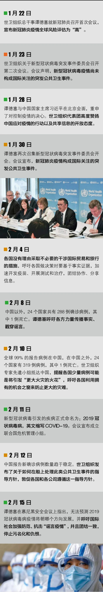
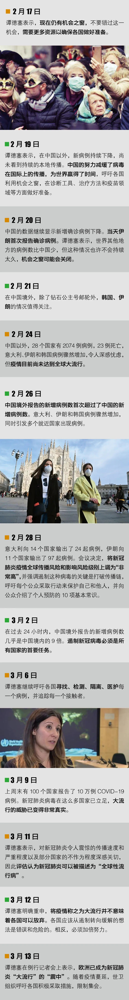

我在海外 | 疫情中，荷兰婆婆的临终弥撒
原文链接 备份链接 荷兰人平时看起来甚至有些淡然，不像南欧人那么热情浪漫。但到了需要帮助别人的时候， 一般都会尽力而为，不带附加条件。 文 | 王巧丽 正视新冠病毒的第一天 晚上7点钟， 荷兰人守在电视机前， 等着首相马克·吕特讲话。 …

“相关国家要抓住疫情防控‘窗口期’”——这句话，世界卫生组织总干事谭德塞说了很多次，最早的警告，是在中国新冠肺炎疫情还十分严重的2月初。然而，他发出的警告，似乎并未让更多国家采取必要的行动。
2月4日，谭德塞在日内瓦说，“目前约99%的病例集中在中国，其他国家的病例数量有限，但这并不表示情况不会发生变化”。彼时，恐怕不少西方国家真的以为能够将新冠肺炎拒之门外或者认为就算进入本土，也不会引起大规模的流行。
中国前两个月以巨大的代价，为世界换来疫情控制的“窗口期”，但世卫组织一次次吹哨并未被一些国家重视，甚至一些西方政客对中国乃至世卫组织进行抹黑攻击，如今疫情已经在全球蔓延，全球都在承受巨大的压力。
让我们来还原一下世卫组织这两个月来的吹哨时间轴，看看机会之窗是如果被全球尤其西方错过的。


整理 | 应 琛
制图 | 刘绮黎


· 欧洲27国无一幸免，张文宏：后续发展不容乐观，跨年度疫情风险越来越大
· 我在海外 | 看到英国政府发布“群体免疫”政策，我开始慌了
[](http://mp.weixin.qq.com/s?__biz=MTUzMDQzNjMwMQ==&mid=2652827150&idx=1&sn=a8357dee9a93c2102380663744b7690f&chksm=68ed23ac5f9aaaba62f3bf6eb78810ea68e53355e579d0279c53b2d0f11780807914d46282b2&scene=21#wechat_redirect)[· 新民一周 | 改变世界的一周](http://mp.weixin.qq.com/s?__biz=MTUzMDQzNjMwMQ==&mid=2652827348&idx=1&sn=3818e9e63a6723cd19856712b6360d2e&chksm=68ed23765f9aaa60709b2e48f3e151646f917d273d93ac45ed14b32bfb92eb469afdf09138fa&scene=21#wechat_redirect)
新民周刊所有平台稿件， 未经正式授权
一律不得转载、出版、改编或进行
与新民周刊版权相关的其他行为，违者必究


原文链接 备份链接 荷兰人平时看起来甚至有些淡然，不像南欧人那么热情浪漫。但到了需要帮助别人的时候， 一般都会尽力而为，不带附加条件。 文 | 王巧丽 正视新冠病毒的第一天 晚上7点钟， 荷兰人守在电视机前， 等着首相马克·吕特讲话。 …
原文链接 备份链接 意大利迎来最“伤心的”一天，目前全国病死率高达4.96%，为全球最高。韩国病死率约为0.70%，疫情已经稳定 文 | 《财经》数据研究员 徐进 图 | 《财经》视觉中心 编辑 | 郝洲 一、国内为进一步复工做准备 今 …
原文链接 备份链接 经常是下午两点，护士长出去告诉挂号者，医生还没吃午饭。满满一房间的患者竟立刻安静下来，急忙为我让了一条“路”出来。 文 | 侯蔚琳 春节前，我们发热门诊突然转来一位新冠肺炎疑似者。我套上防护服，进入层流病房采集患者生命 …
原文链接 备份链接 李起元说，这是他人生经历过最严重的事情了。“韩国很小，所以平时新闻也不多。现在发生了这么大的事，电视里新闻都和这个有关了。24小时，全部都是。” 文 | 王仲昀 “是的，一切在2月19日之后都变得不一样了。19日之前， …
原文链接 备份链接 目前，新冠肺炎疫情在多国持续蔓延，韩国、意大利、伊朗等国感染人数持续增加，比利时、约旦、沙特、塞内加尔、突尼斯、拉脱维亚等国2日宣布出现首例新冠肺炎确诊病例。 据世卫组织最新报告，截至欧洲中部时间3月2日上午10时（ …